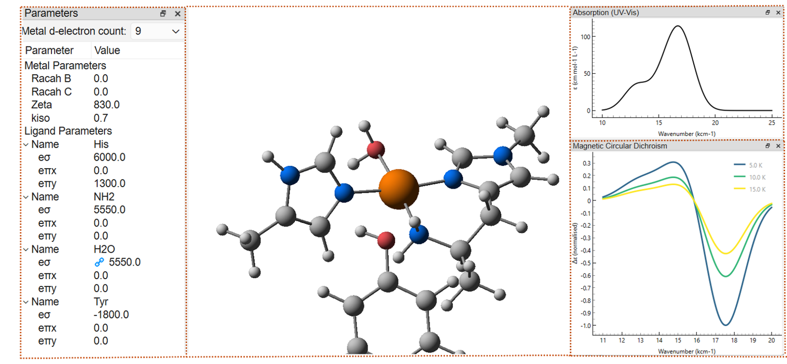
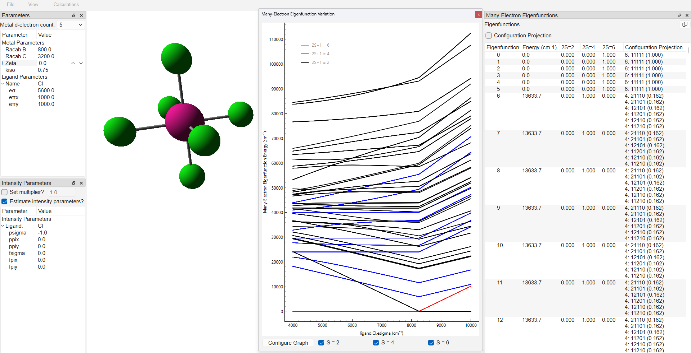

Kestrel - Ligand Field Calculations
for 3d transition metal complexes
Kestrel is a computational package that performs ligand field calculations on any monomeric 3d transition metal complex in any coordination geometry. Based on the Cellular Ligand Field (CLF) model developed by Malcolm Gerloch et al., Kestrel assumes minimal spatial overlap between the metal and ligand orbitals and can be run on standard desktop computers and laptops.
The effect of the ligands is described using chemically significant parameter values, allowing calculations to be carried out and interpreted in real-time — providing a tool for relating the chemistry of a transition metal complex to its spectroscopic results.

Kestrel can be downloaded free of charge as a GUI (Graphical User Interface) that provides a user-friendly visual interface. Alternatively, a Python package (KestrelPy) is available for advanced use via GitHub.
Features
Real-time calculations
Up to 1,000 calculations per second for d¹ and d⁹ systems. Even d⁵ systems complete in under a second through Kestrel's parametric approach.
Multi-configurational energies
Calculates the energy and spin multiplicity of the ground state and each excited state. Tanabe-Sugano-style diagrams can also be generated to visualise how the ligand field affects the electronic states.
UV/CD/MCD spectral simulation
Calculates d-d transition intensities, enabling simulation of d-d transitions in absorption (UV), circular dichroism (CD), and magnetic circular dichroism (MCD) spectra.
EPR A and g values
Calculates EPR parameters including electronic g factors, metal-hyperfine coupling A values and its isotropic and anisotropic contributions.
Paramagnetic susceptibilities
Calculates the paramagnetic susceptibility and can plot susceptibility curves across a temperature range to model phenomena such as spin-crossover.
d-orbital energies & compositions
Computes the energy of each d-orbital and its orbital character, permitting comparison with experimental and theoretical crystal field splittings.
Download Kestrel GUI
Kestrel's GUI is available for Windows and macOS as a .exe and .dmg file respectively.
The latest stable releases are linked below and are hosted on GitHub releases. We recommend checking back regularly for updates.
Installation Instructions
Windows (.exe)
- Download the
.exefile above. - Double-click the
.exefile to run Kestrel. - If Windows Defender flags the file, right-click and select
Properties, then check theUnblockoption. Kestrel should then launch.
macOS (.dmg)
- Download the
.dmgfile above. - Double-click to open the
.dmgfile. - Drag the Kestrel
.appicon into your Applications folder and double-click to launch the GUI.
Version History
| Version | Release Date | Notes | Link |
|---|---|---|---|
| v1.0.0 | May 2026 | Initial public release | GitHub Release |
Citation
If you use Kestrel in your work, we kindly ask that you provide the following citation:
GUI Documentation
User Guides
Quickstart Tutorial Files
Kestrel uses standard .xyz files for coordinate input and its own .kes format for saving calculations.
The .xyz file below provides the coordinates used in the quickstart tutorial and the .kes file the results.
For further examples, see the Resources page.
| Filename | Type | Description |
|---|---|---|
| cu_py4.xyz | Input |
Coordinates for the square planar Cu(II) complex used in the quickstart tutorial. |
| cu_py4.kes | Output |
Calculation results for the example in the quickstart tutorial. |
Resources
This page contains sample datasets and academic literature that supports the theoretical basis of Kestrel's calculations.
Sample datasets contain input (.xyz) and calculation result (.kes) files for common coordination geometries.
By default, systems are configured as d⁵ Mn(II) complexes — the d electron count can be changed within the GUI and
different ligands can be represented by adjusting the e parameter values.
Sample Datasets
Select a geometry above to view file details and download links.

The variation of electronic energies with parameter value can be plotted in a manner akin to a Tanabe-Sugano diagram by:
- Setting SOC/Zeta to 0 cm⁻¹ and right-clicking on the parameter to be varied
- Selecting
Plot v parameterand then choosingMany-Electron Eigenfunctions
Literature Resources
Sources of parameter values
The following publications provide sources and explanation of ligand field parameter values. Please note that this is not an exhaustive list and that parameter values may vary substantially depending on the exact system being parameterised.
- P. E. Hoggard (2004) "Angular Overlap Model Parameters." Structure and Bonding DOI link ↗
- H. Schmidtke (2004) "The variation of Slater-Condon parameters Fᵏ and Racah parameters B and C with chemical bonding in transition group complexes" Structure and Bonding DOI link ↗
- G. Nunn (2023) "Development of a contemporary ligand-field program for 3d transition-metal complexes." PhD Thesis, University of York Web link ↗
Theoretical literature
The following publications provide an overview of the theoretical basis behind Kestrel's calculations.
- M. Gerloch (1983) "Magnetism and ligand-field analysis." Cambridge University Press, Cambridge, 1st edition
- M. Gerloch and R. G. Woolley (1981) "Is the Angular Overlap Model Chemically Significant?" J. Chem. Soc., Dalton Transactions DOI link ↗
- R. G. Woolley (1981) "The angular overlap model in ligand field theory." Molecular Physics DOI link ↗
- A. Bencini, C. Benelli and D. Gatteschi (1984) "The Angular Overlap Model for the description of the paramagnetic properties of transition metal complexes." Coordination Chemistry Reviews DOI link ↗
- R. J. Deeth (2022) "Ligand Field Theory for Linear ML2 Complexes." European Journal of Inorganic Chemistry DOI link ↗
Community Hub
Share your .kes calculation results with the community or browse contributions from other users.
All the files below have been checked and approved by the Kestrel Development Team.
| Filename | Description | Author |
|---|---|---|
| LsAA9.kes | Copper(II) protein (LPMO, AA9) fitted to experimental data. | George Nunn - University of York |
| BaAA10.kes | Copper(II) protein (LPMO, AA10) fitted to experimental EPR data. | Ben Grace - University of York |
| AoAA11.kes | Copper(II) protein (LPMO, AA11) fitted to experimental EPR data. | Ben Grace - University of York |
| FeIV_oxo.kes | Iron(IV) oxo complex with calculated MCD/UV spectra and electronic energies. | George Nunn - University of York |
| FeII_bpp2_H.kes | Fe(II) spin-crossover complex showing electronic energies and spin-crossover at 270K. | Ben Grace - University of York |
Share Your Calculations
For security, we review all submissions via a Google Form.
Please attach your .kes file and give a short description (max 150 characters) via the link below.
Approved submissions will be added to the table above periodically.
Publications using Kestrel
The below publications make use of Kestrel. If you use Kestrel in any published work please contact us so we can add your publication to the list below.
- P. Comba, G. Nunn, F. Scherz and P. H. Walton (2022) "Intermediate-spin iron(IV)-oxido species with record reactivity." Faraday Discussions. DOI link ↗
Stay Updated
Join the Kestrel mailing group to receive notifications about new releases and features.
This link will redirect you to a Google group sign-up page. By subscribing, you agree to receive notifications of new releases and features. We will never share your data. You can unsubscribe at any time.